201501310930-1300: The Hunt @ MBS - walkthrough
Day #0
- The adventure all began with this email invitation puzzle: 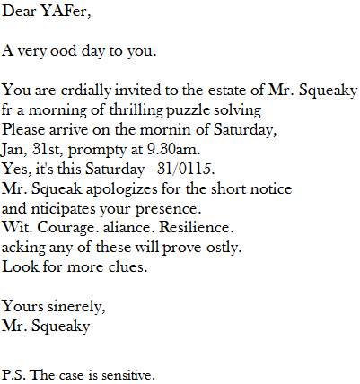
- A keen eye would immediately notice some characters missing (highlighted in red+bold)
- Assembling these carefully would then form the Google shortened URL
http://goo.gl/yaVLcc, leading to the following screen:
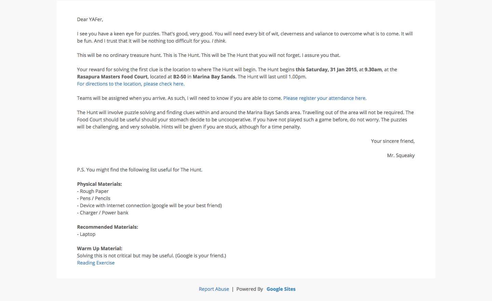
- After registering & noting the details & directions, it's time to start on the
Reading Exercise!
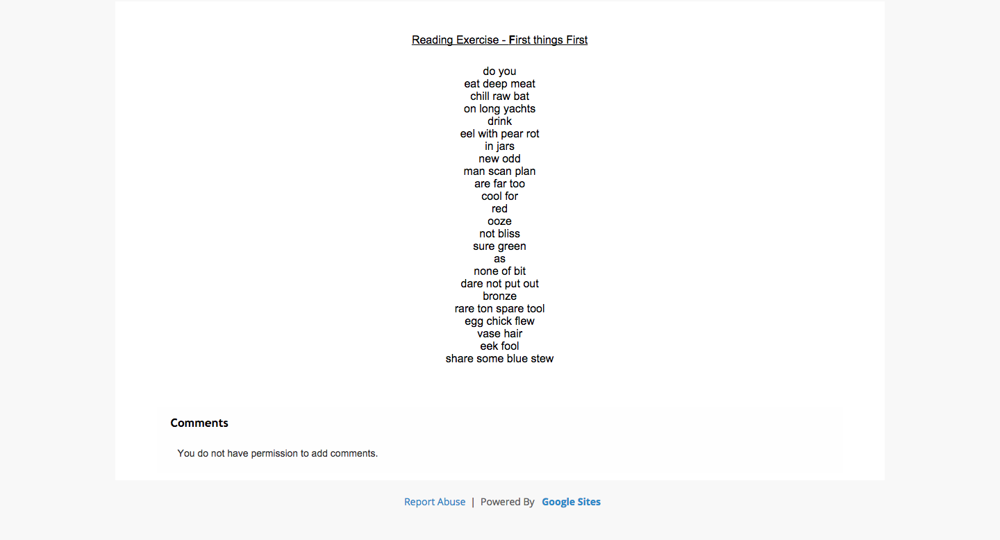
- Ah!
First things First, why not look at all the first letters?
|
|
Dear YAFer, A very good day to you. You are cordially invited to the estate of Mr Squeaky for a morning of thrilling puzzle solving. Please arrive on the morning of Saturday, Jan, 31st, promptly at 9.30am. Yes, it's this Saturday - 31/01/15. Mr. Squeak apologizes for the short notice and anticipates your presence. Wit. Courage. Valiance. Resilience. Lacking any of these will prove costly. Look for more clues. Yours sincerely, Mr. Squeaky P.S. The case is sensitive. |
do you eat deep meat chill raw bat on long yachts drink eel with pear rot in jars new odd man scan plan are far too cool for red ooze not bliss sure green as none of bit dare not put out bronze rare ton spare tool egg chick flew vase hair eek fool share some blue stew
decodeinmacronsandbreves, ie. decode in macrons and breves
duː juː iːt diːp miːt ʧɪl rɔː bæt ɒn lɒŋ jɒts drɪŋk iːl wɪð peə rɒt ɪn ʤɑːz njuː ɒd mæn skæn plæn ɑː fɑː tuː kuːl fɔː rɛd uːz nɒt blɪs ʃʊə griːn æz nʌn ɒv bɪt deə nɒt pʊt aʊt brɒnz reə tʌn speə tuːl ɛg ʧɪk fluː vɑːz heə eek fuːl ʃeə sʌm bluː stjuː
{short vowel word -> .; long vowel word -> -} ?-----.-...../-.-..--./...-----.-..--..../-..../-.--..------.--Morse Can Sometimes Be Yummy
Day #1
- I ate up one of the Oreo cookies in the box, not knowing that it was supposed to be the first clue; and I don't have a photo of it either, but anyway, as promised in the admin instructions, the
Reading Exercisewas useful in preparing to parse more (yes, you guessed it!) Morse Code!
<insert missing photo here>
- Solving that
Oreo cookies arrangement -> Morse Code -> English words -> URL path, would result in:wherelinesmeet
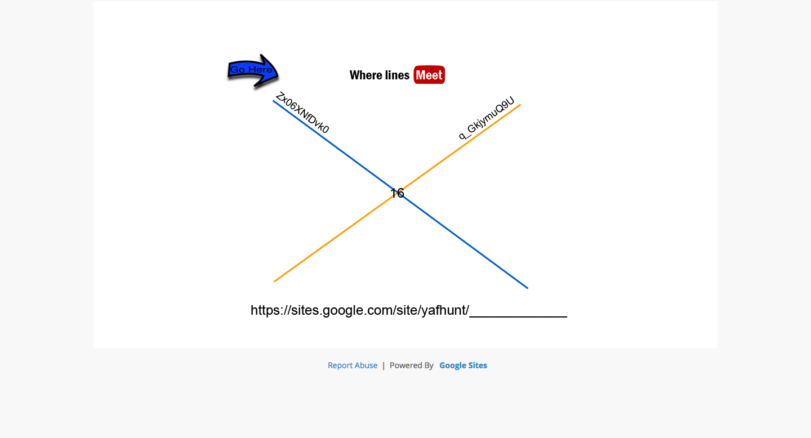
- The
Meetlooks a lot like Youtube's logo; so indeed those arevideo_ids.
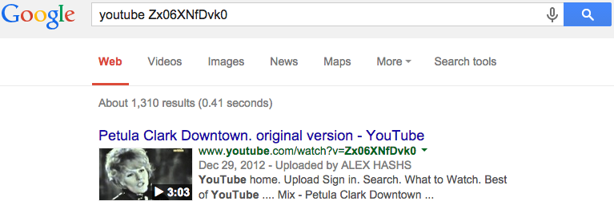
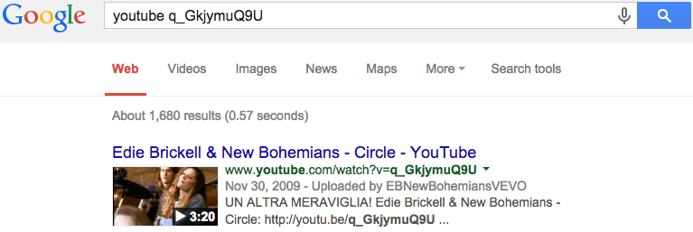
- Could have easily guessed that the next location was Bayfront (station
DT16), lying at the intersection of theDowntown&CircleMRT lines. Visitingbayfront, we find [Clue #1]:
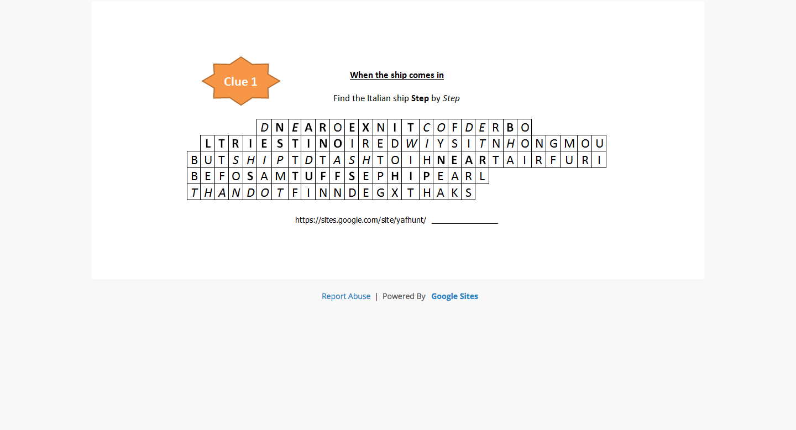
- Looking at the bold letters reads:
NEAR EXIT B (of DT16 Bayfront) LTRIESTINO NEAR STUFF SHIP - Looking at the italic letters reads:
DECODE WITH SHIP, DASH TH[E]N DOT
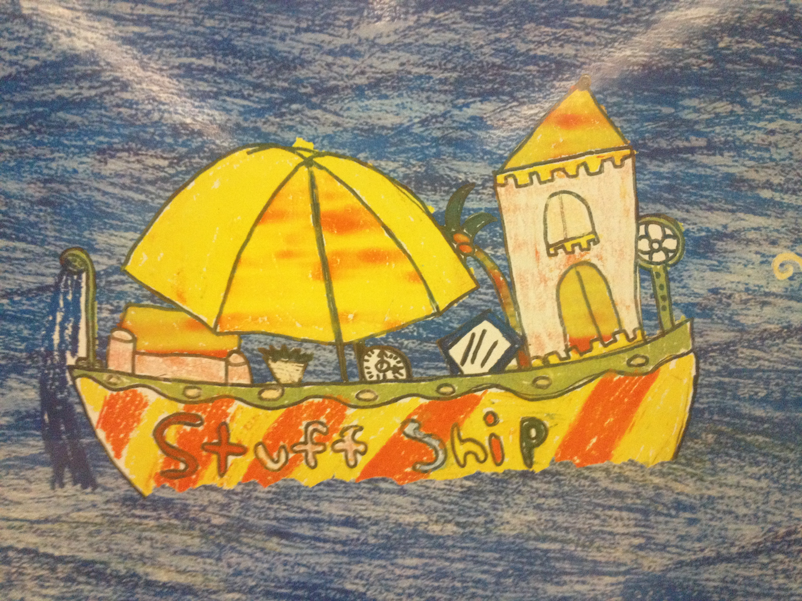
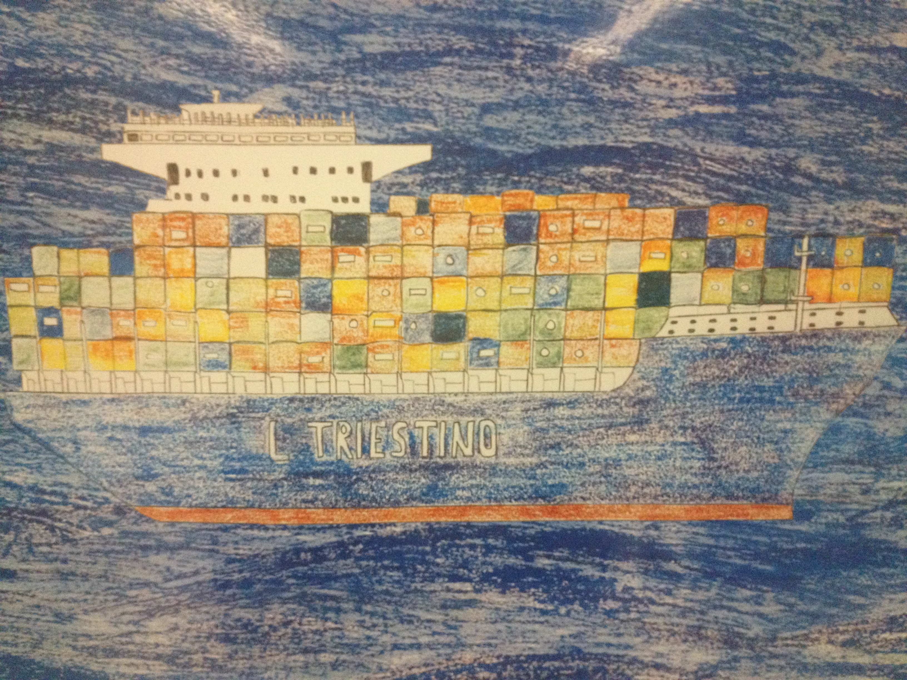
- Overlaying the following grid over the cargo in
L TRIESTINO
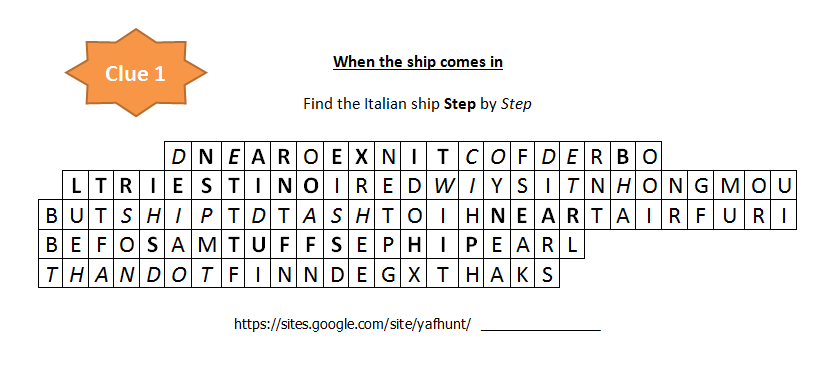
- dash:
NOT FIRST BUT SAME OF THE NEXT - dot:
NO BODY NO MOUTH IN AIR SPEAK - ...so echo ! [Clue #2] 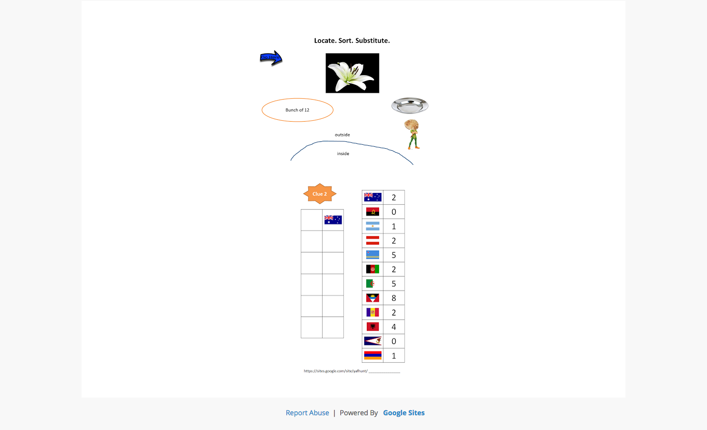
- time to head to the lily pond, esp. the trees by Olympic Walk, & look up flags of the world. 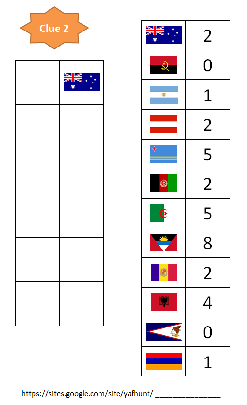
- (right panel) The flags in order on the clue are:
- Australia
- Angola
- Argentina
- Austria
- Aruba
- Afghanistan
- Algeria
- Antigua and Barbuda
- Andorran
- Albania
- American Samoa
- Armenia
- (left panel) Filling in from the layout of the plaques beside the trees, like: 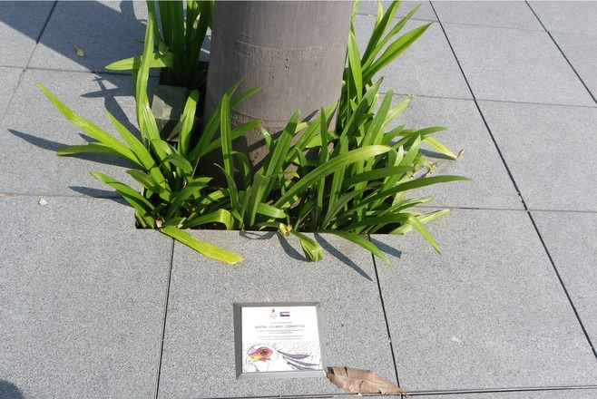
- ...yields: <some missing info here> 22 15 18 19 05 23, or rather,
vortex
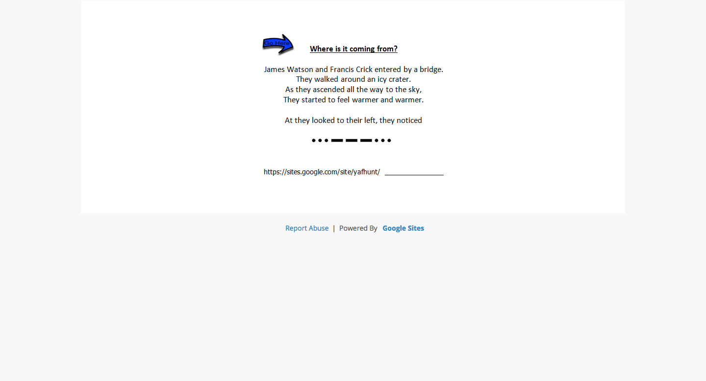
- "James Watson, Francis Crick": Discovery of DNA Double Helix
- "bridge": Helix Bridge (previously known as the Double Helix Bridge)
- "icy crater": Skating rink
- "...ascended all the way to the sky": take the long escalator up
- "looked to their left": well, what it says
- "...---...": SOS in Morse Code
- <some hints given>...
birkenstock
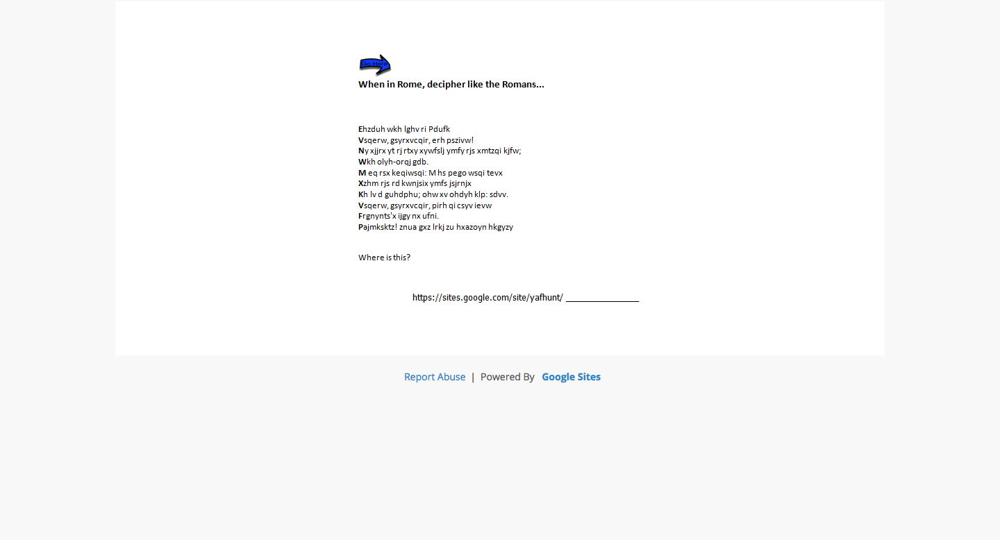
When in Rome, decipher like the Romans...mmm...how about Caesar cipher ?- from:
[img] Train Network Map
![[img] Train Network Map](img/mrt-map.jpg){kind=link}
Ehzduh wkh lghv ri Pdufk Vsqerw, gsyrxvcqir, erh pszivw Ny xjjrx yt rj rtxy xywfslj ymfy rjs xmtzqi kjfw; Wkh olyh-orqj gdb. M eq rsx keqiwsqi: M hs pego wsqi tevx Xzhm rjs rd kwnjsix ymfs jsjrnjx Kh lv d guhdphu; ohwxv ohdyh klp: sdvv. Vsqerw, gsyrxvcqir, pirh qi csyv ievw Frgnynts'x ijgy nx ufni. Pajmksktz! znua gxz lrkj zu hxazoyn hkgyzy
<offset>: <deciphered text> 3: Beware the ides of March 4: Romans, countrymen, and lovers 5: It seems to me most strange that men should fear; 3: The live-long day. 4: I am not gamesome: I do lack some part 5: Such men my friends than enemies 3: He is a dreamer; letus leave him: pass. 4: Romans, countrymen, lend me your ears 5: Ambition's debt is paid. 6: Judgement! thou art fled to brutish beasts
britishindia1747TWG [Clue #3]
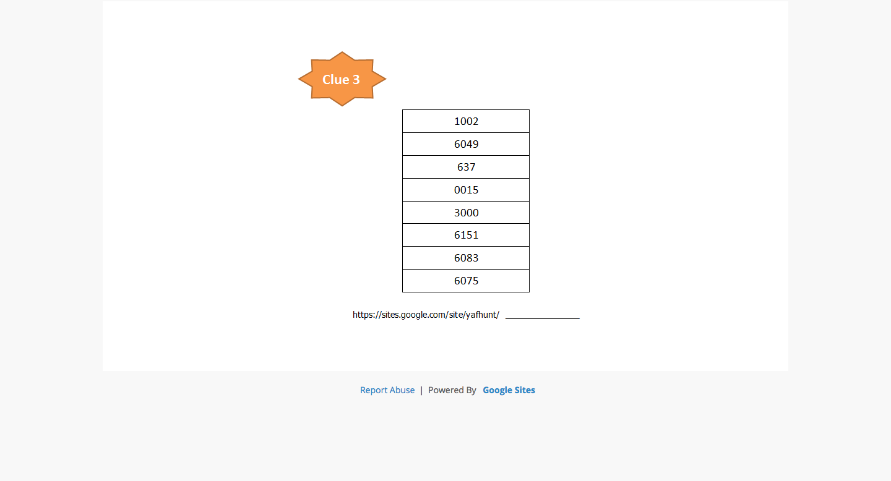
https://www.twgtea.com/product/details?code=T${code}:1002 [R]wanda BP1
6049 [A]mi Thé
637 [I]mperial Pu-Erh
0015 [N]<missing info here>
3000 [B]reakfast Earl Grey
6151 [O]cean Voyage Tea
6083 [W]ater Flower Tea
6075 [L]over's TeaRAINBOWL